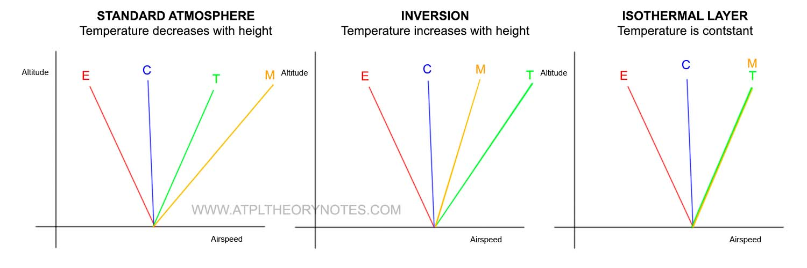
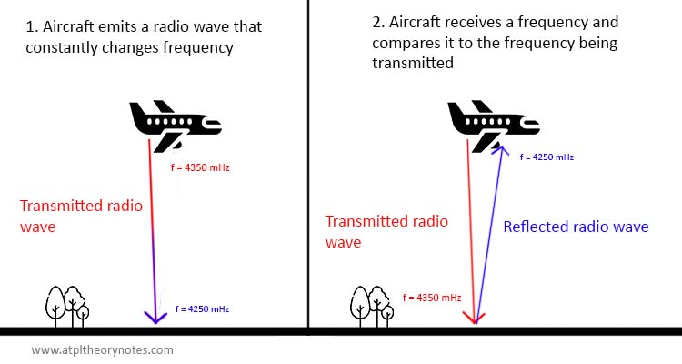
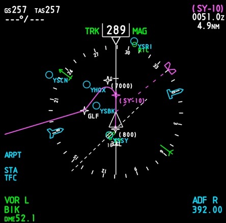
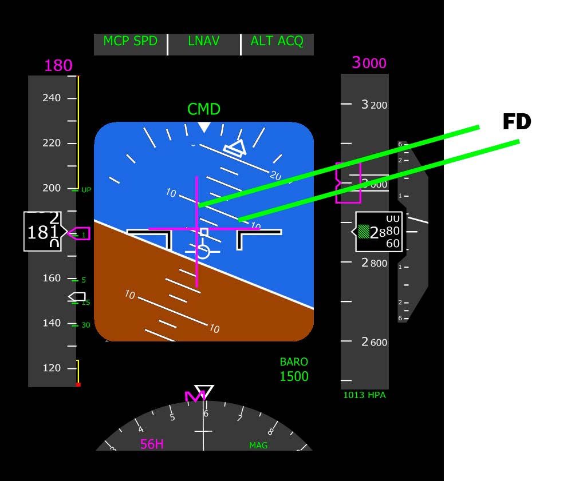

1. Pitot-static systems
PREFACE
· Standard conditions at sea lea level
- Temperature: 15ºC
- Standard temperature lapse rate is 1.98ºC/1000 ft until 36090 ft. Then, an isothermal layer begins with a constant temperature of -56.5ºC
- Atmospheric pressure: 1013 hPa.
- Always decreases with height
- Density: 1'225 kg/m³
- Always decreases with height
· Types of pressure
- Static pressure. Acts in all directions. When a body is stopped, it's subject to static pressure.
- Dynamic pressure. Caused by movement.
- Total pressure. Sum of static and dynamic pressure. Forward-facing parts of an aircraft are subject to total pressure (static pressure, you can never get rid of it + dynamic pressure due to motion)
PITOT-STATIC SYSTEMS
· How aircraft measures pressure
- Static vents/ports are located at the sides of the fuselage to sense static pressure
- Remember that static pressure acts in all directions
- A Pitot tube (forward looking) senses total pressure. It's separated from the fuselage to avoid capturing disturbed air which reduce the accuracy of the readings.
- Some aircraft use a combined Pitot-static system. The same device is used to measure both types of pressure. Main disadvantage is that turbulence causes inaccuracies on static port mainly.
· Safety measures
- Pitot heads usually incorporate a water drain designed to get rid of all the contamination and improve the accuracy of the system.
- Pitot tubes can be electrically heated to avoid the formation of ice.
- Static ports are not prone to icing because they are not subject to airflow, so they don't need to be heated.
ERRORS COMMON TO ALL INSTRUMENTS USING PITOT-STATIC SYSTEM
· Position error.
- Because streamlines around an aircraft are affected by the presence of it, there's not a single point throughout the fuselage at which the static pressure is equal to atmospheric static pressure (Bernoulli's Theorem).
- The ideal position for the static port is a position where the local air pressure in flight is always equal to the pressure remote from the aircraft; however, there is no position on an aircraft where this ideal situation exists for all angles of attack.
- As a result, aircraft designers attempt to find a position where the error between static pressure and free-stream pressure is a minimum across the operating range of angle of attack of the aircraft. The residual error at any given angle of attack is called the position error.
- It's also caused by turbulence generated by the aircraft / Pitot tube
· Maneuver error.
- During a maneuver, a short-duration error is induced because airflow around the aircraft is altered (ailerons, change of flight path, turbulence, etc)
- This affects the accuracy of the sensors during and slightly after the maneuvers. It's a short-duration error that disappears quickly after the maneuver is completed.
· Static unbalanced. During sideslips, one part of the fuselage is exposed to "relative wind", and the static port will measure static air pressure + a bit of dynamic pressure depending on the sideslip angle.
- Commercial aircraft are fitted with static ports at both sides of the fuselage because the leeward side balances the extra-pressure on the windward side.
ALTERNATE STATIC SOURCE
· Light aircraft have an alternate static source in the cabin, usable if the outside static port gets blocked
- Inside the aircraft, static pressure is slightly less than outside due to aerodynamic suction, so expect the altimeter to overread
- Aerodynamic suction: because streamlines are affected by the aircraft, air is accelerated around the fuselage (same principle that happens around the wings). This acceleration causes a small vacuum that "sucks" air from the cabin, lowering its pressure.
2. Pressure altimeter
PRINCIPLES
· Basics and purpose
- Produces a linear representation of a non-linear variation in height (pressure always decreases with altitude, but not in a linear way)
- Fed by static pressure
COMPONENTS
· Components
- Air pressure inlet. Feeds the whole cage with outside static pressure
- Aneroid capsules. Capsules are sealed and contain vacuum or a very small pressure.
- Linking mechanism. Converts expansion and contraction of the capsule into movement of the pointers
- Pointers
- Sub-scale setting. Used to set the QNH
· Different cockpit temperatures affects the viscosity of air and how the capsule responds to changes in pressure.
- A temperature compensation mechanism known as d-spring or leaf spring is fitted to prevent this from interfering with the altimeter readings.
ERRORS
· Errors
- Position, maneuver and static-unbalanced unless compensated
- Barometric error: if pressure at MSL is different from ISA's 1013 hPa, altimeter readings will not be accurate. Can be corrected through the QNH setting.
- Temperature error: if pressure differs from ISA.
- True altitude = Indicated altitude + (4 x ISA DEV x 000s of feet)
- For example: altimeter shows 17500, ISA DEV is +9 -> True altitude = 17500 +- (4 x 9 X 17.5) -> True altitude = 18130
- Instrument error: imperfections on the manufacturing and inaccuracies of the instrument mechanism. Increases with altitude since more sensitivity is needed.
- Hysteresis error: after a prolonged time in a constant altitude, the capsule loses a bit of elasticity due to the lack of movement. A bigger pressure differential is required to expand or contract the capsule, making it a bit "laggy" at the beginning.
BLOCKAGES
· Blockages
- If a blockage occurs, the altimeter will show the altitude at which blockage occurred.
- It can be solved by using the alternate static source, which will overread due to aerodynamic suction.
- If aircraft is not fitted with alternate static source and knowing the altitude is critical for flight, it's suggested to break VSI glass
DENSITY ALTITUDE
· Density altitude
- It's the ISA altitude at which the air density is equivalent to the air density with current conditions.
- Can be calculated with this formula: Density altitude = Pressure altitude +- (120 ft x ISA DEV)
- CAUTION! Pressure altitude is the altitude that the altimeter would read with 1013 set
TYPES OF ALTIMETERS
· Types of altimeters
- Simple altimeters: 1 capsule only. Good for low altitudes
- Sensitive altimeter: 3 capsules. Good for up to 25.000 ft
- Tolerances: +-50 ft at sea altitude
- +- 175 ft at 10.000 ft
- +-600 ft at 40.000 ft
- Servo altimeter: Good for all altitudes. Uses magnetic forces to generate the movement of needles. "I" bar is moved by capsules, and, through electromagnetic induction, an electrical circuit current is generated, turning a motor.
- Benefits: Less friction, no lag error, accuracy improved
- Height encoding altimeter: It digitalizes inputs and sends them to ATC
3. Vertical Speed Indicator (VSI)
PRINCIPLES
· Measures the rate of change of static pressure. Fed only by static vent.
· How it works
- Cage is subject to "previous" static pressure through a calibrated leak or metering unit.
- Aneroid is subject to current static pressure
- Therefore, we can measure if the current pressure is bigger or smaller than it was 4 seconds ago
- However, it needs some seconds to work (around 5s), suffering from lag error.
· A capillary tube corrects density and temperature changes.
COMPONENTS
· Components
- Aneroid capsule subject to current static pressure
- Choke or metering unit, comprising two capillary tubes and two sharp-edged orifices, compensating for changes in density, temperature and viscosity of the air
- A mechanical linking mechanism that transforms expansion and contraction into movement of the needles
- Pointers
ERRORS
· Errors:
- Position, maneuver induced, static-unbalanced and instrument error.
- Lag, since the case takes 4 seconds to pressurize.
· Blockages
- If static ports gets blocked, the VSI reading will return to zero.
INSTANTANEOUS VSI / INTERTIA LEAD VSI
· Instantaneous VSI / Intertia Lead VSI:
- It uses an accelerometer that responds quickly to changes of altitude. The accelerometer uses a piston that pumps air into or out of the aneroid capsule.
- It’s instantaneous, but can give false readings during steep turns or turbulence.
- Although we call it instantaneous, the first 3-4 seconds it shows the aircraft trend (either climbing or descending), but the reading itself is not accurate until the cage is filled with the static pressure of 4 seconds ago. Then, it shows rate.
PRESENTATION
· Two types of typical presentations
- Linear scale
- Logarithmic scale (used when bigger accuracy is required at low vertical speeds)
4. Airspeed Indicator (ASI)
PREFACE: DYNAMIC PRESSURE
· Dynamic pressure formula = ½ρv²
- ρ = air density
- v = TAS
· Dynamic pressure is part of the lift formula
- L = Pd S CL
- Therefore, it is important to know the dynamic pressure because assuming that the surface of the wings and the coefficient of lift doesn't change, the dynamic pressure will govern how much lift we are generating.
AIRSPEED INDICATOR
· Working principle
- It measures the difference between static and total pressure, which, in turn, is dynamic pressure, and transforms it into a speed reading.
· It may not indicate the real speed if the air density is different from the standard air density, but it indicates how the aircraft is going to behave
- The ASI is a direct reading of the dynamic pressure to which an aircraft is subject, calibrated in a scale of knots
- Because dynamic pressure is the first part of the lift formula, this is more useful to pilots than knowing the actual airspeed of the aircraft
- In fact, it is a pressure indicator but with a knots scale instead of hPa!
· Components
- Cage is subject to static pressure
- Aneroid (capsule) is subject to total pressure
- The difference between both is the dynamic pressure, so the capsule will expand if dynamic pressure increases and viceversa
- We can assume that if dynamic pressure is increasing it's due to airspeed mainly
- A linking mechanism turns the capsule movement into pointer movement
ERRORS
· Position, maneuver, static unbalanced and instrument error
· Compressibility error
- If air is compressed, more particles can get into the Pitot tube, so it senses more pressure than it should
- That's why at high speeds IAS is higher than EAS
- Not a problem below 260 knots / mach 0.4
· Density error
- The ASI is calibrated to ISA MSL density (1.225 kg / m³)
- This means that the indicated airspeed will only be equal to the true airspeed if current air density is 1.225 kg/m³
- However, as we climb, air density decreases. That's the reason why TAS is higher than IAS with altitude (density is lower)
DEFINITIONS
· Expressions of airspeed
- IAS. Indicated Airspeed. Whatever the instrument is showing, even if its broken, that's what it indicates!
- CAS. Calibrated Airspeed. IAS corrected for pressure errors.
- To be honest, nowadays the difference between IAS and CAS is very little.
- You can have a look at your airplane manual to see the difference between IAS and CAS at different airspeeds and configurations. You will notice that it's almost never more than 2-3 knots.
- EAS. Equivalent Airspeed. CAS corrected for compressibility errors
- Again, useful only when flying at more than 260 knots / mach 0.4
- EAS will be less than IAS (IAS overreads because many compressed particles get into the Pitot)
- TAS. True Airspeed. EAS corrected for density errors
- This is the actual speed that the airplane is flying in relation to the surrounding air
- Because density decreases with altitude, TAS is higher than IAS
- Mach number
- Expresses the TAS of the airplane in relation to the Local Speed of Sound
- Local Speed of Sound can be calculated with this formula: LSS = 38.94 x √(Air temperature in Kelvin)
- Mach = TAS / LSS
· Speed definitions
- Vs0: stall speed at landing configuration (mnemonic: Vs0 stands for shit out)
- Vs1: stall speed at any given configuration. Typically used for CLEAN configuration, or, at least, not a landing configuration (mnemonic: Shit in)
- Vfe: Maximum flaps extended speed
- Vno: Normal operating speed. Can only be exceeded in still air and with caution, since any turbulence can make us exceed the limit load factor
- Vne: Never exceed speed.
- Vlo: Maximum landing gear OPERATING speed. Maximum speed at which you can operate the retraction/extension mechanism
- Vle: Maximum landing gear extended speed. Maximum speed you can fly with the gear locked in the down position
- Vra: Maximum speed in rough air
- Vyse: Best rate of climb speed (aka Vy)
· Colored arcs
- White: From stall speed with full flaps (Vs0) to maximum flap extended speed (Vfe)
- It's essentially the range of operation with flaps
- Green: From stall speed clean (Vs1) to normal operating speed (Vno)
- It's essentially the normal range of operation with a clean configuration
- Yellow: From normal operating to never exceed speed
- Caution range
- Red line: Vne. Never exceed!
BLOCKAGES
· Pitot blockage (In short, if pitot is blocked the ASI will behave like an altimeter)
- During climb, the capsule expands and the ASI will overread
- During descent, the capsule contracts and the ASI will underread
· Static port blockage
- During climb, the capsule contracts and the ASI will underread
- During descent, the capsule expands and the ASI will overread
5. Machmeter
PRINCIPLE
· Machmeter is essential for high speed flight.
- Aircraft speed limits are given in terms of Mach number
- Speed at which airflow around some part of the aircraft reaches Mach 1 is known as critical Mach number, or Mcrit
- In order to understand and be able to use these limits, we must know or Mach number!
- Furthermore, the machmeter is the most accurate speed reading device
· Mach number
- Expresses the TAS of the airplane in relation to the Local Speed of Sound
- Local Speed of Sound can be calculated with this formula: LSS = 38.94 x √(Air temperature in Kelvin)
- Note that the local speed of sound only depends on the temperature of the air.
- At low temperatures, the speed of sound is slower
- Mach = TAS / LSS
MACHMETER
· Components
- Static case
- A capsule filled with total pressure (like the airspeed indicator)
- A capsule filled with vacuum / little pressure (like the altimeter)
- Ratio arm
- Ranging arm: transforms movement of the ratio arm into rotary movement
· There's a more complex instrument called mach / airspeed indicator, which combines the function of both
- It's got a barber's pole that indicates Vmo at a given altitude
ERRORS
· Errors
- Pressure errors (position and maneuver errors)
- Instrument error (manufacturing). Typically less than M0.01
- It has NO compressibility or density error because those errors don't affect the dynamic pressure/static pressure ratio
BLOCKAGES
· Blockage errors are the same as the ASI blockage errors.
RELATIONSHIP BETWEEN EAS, CAS, TAS AND MACH

Tip: Find your own mnemonic to remember all of them, you will never forget it.
6. Gyroscopic principles
GYROSCOPIC PRINCIPLES
· Properties of a Gyroscope.
|
TERMINOLOGY
· Axis movement
- Wander: Any movement of the gyro spin axis away from its chosen direction
- Real wander: Imperfections and friction cause small rates of random precession. It can be considered a failure of the gyro to maintain its position.
- Apparent wander: A gyro seems to wander when the direction of its spin axis is compared with a datum that is moving.
- Topple: Movements of the gyro axis in the vertical plane
- Drift: Movements of the gyro axis in the horizontal plane. Can also be real or apparent (caused by aircraft transport)
- Horizontal axis rotors can topple and drift.
- Vertical axis rotors can only topple.

· Degrees of freedom
- Gyroscopes are classified according to their degrees of freedom
- "Degrees of freedom" means around how many axes we can MEASURE rotation (not that it can rotate, but that we can measure how much it's rotating)
- Therefore, the rotation axis is not accounted for, since we can not measure if that axis has been rotated (the gyro will just spin at 18000 RPM without you even noticing)
- Gyros need at least 1 gimbal for every degree of freedom that we want it to have.
- Gimbals are suspended rings that can rotate around an axis. Sometimes they are not circular but square, but the principle is the same.
- Rate gyros, for example, have 1 degree of freedom. Therefore, they need 1 gimbal.
- See the example image below.
- Axis z (not Z) is the rotation axis. This one doesn't count as a degree of freedom!
- Because there's one square gimbal, which is suspended, the gyro can rotate around the "x" axis. Therefore, it's a one degree of freedom gyroscope!
Image source: researchgate.net
{kind=link}
· Planes of movement
- From time to time, you will see that gyros are classified according to the "planes of movement" instead of the degrees of freedom
- Planes of movement means around how many axis the gyro is free to move
- In the case above, the gyro is free to move around the "z" axis and around the "x" axis
- Therefore, the gyro above has 2 planes of movements
- Note that this classification is not used by EASA, but you will may encounter it on some question banks
- Keep in mind that gyroscopes always have 1 more plane of movement than degrees of freedom. Again, this is because the gyro axis doesn't count as a degree of freedom.
GYROSCOPE TYPES
· Types of Gyroscopes.
- Space or Free Gyroscopes. Axis always points to the initial position in space. Not used in aviation
- Tied Gyroscope. Two degrees of freedom. The axis is always pointing to a particular direction and probably needing a correction mechanism (e.g, a gyroscope always pointing towards the centre of the Earth)
- Rate Gyroscope. One degree of freedom. Used in turn indicators for example
- Rate Integrating Gyroscope. One degree of freedom. Used in INS/IRS
ELECTRICAL GYROS
· Suction vs Electrical Gyros.
- Electrical Gyros can increase RPM, and be more reliable.
- Electrical Gyros do not depend on the density of the air.
- Electrical Gyros do not need complex cases to get rid of the contamination.
- Overall, electrical gyros are better but more expensive.
CORRECTION SYSTEMS
· Correction systems.
- Leveling system: Used to maintain a horizontal spin axis.
- The pilot is responsible for leveling the system by uncaging, correcting, caging, creating an air jet that induces precession to erect the gyro.
- Erection System: Used to maintain a vertical spin axis.
- If the spin axis moves away from the vertical, a system of pendulous vanes generates a jet force that erects the gyro
SUMMARY - RULE OF THUMB
| R | E | S | T |
| T | A | X | D |
| 1 | 2 | 2 | 2 |
| H | V | V | H |
- First row is gyro type: REST - Rate, Earth, Space, Tied
- Second row is the instrument that uses that gyro: TAXD - Turn Indicator, Artificial Horizon, X (not used), Directional Gyro
- Third row is the degrees of freedom
- Fourth row is the axis alignment: H V V H (horizontal or vertical axis)
LASER GYROS
· Modern IRS systems use laser gyros that have nothing to do with conventional gyros
- In fact, laser gyros don't have spinning rotors, but they perform the same tasks as rate integrating gyros that they have replaced
- For that, they use two beams of light. When rotating, one beam has to travel more distance than the other. But because they are already traveling at the speed of light and nothing can ever go faster than light, beams react changing their frequency.
- Only disadvantage is laser lock: at low rotational speeds, both beams tend to lock into the same frequency. Can be overcome by "dithering", which consists on oscillating the gyro rapidly about its sensitive axis.
7. Directional gyro
PRINCIPLE
· Purpose
- The Directional Gyro provides a stable reference for maintaining headings and executing precise turns
- Directional Gyro is good during turns and turbulence. However, it's got no magnetic element, so the pilot must align it with the compass to make sure that it's reading our heading instead of a random figure.
- Magnetic compass is good during stable straight and level flight. However, it gets inaccurate during turns and turbulence, and it's essentially useless
· Gyroscope characteristics
- The directional gyro has its axis tied to the horizontal by a leveling system
- It has two degrees of freedom
- Vacuum driven: airflow is directed at the rotor through twin jets. These jets are not only used to spin the rotor, but also to tie the axis to the horizontal.

Image source: studyflying.com
· Operation
- Pilot must realign the Directional Gyro with the compass every 15 minutes, while the aircraft is straight and level
ERRORS
· Real or Random Drift. Caused by gimbal friction and mechanical imperfections. Pilot corrects it every 15 minutes.
- Conventional gyros have a real drift of around 15º / hour
- Modern electrical gyros have a real drift of around 1º / hour
- Laser gyros used in modern IRS have a real drift of less than 0.01º / hour
- Sign criteria
- Clockwise, right = negative
- Counterclockwise, left = positive
· Apparent Drift due to Earth Rotation
|
· Compensation for Apparent Drift due to Earth Rotation
|
· Apparent Drift due to airplane movement
|
Total drift = +- Earth wander +- Latitude Nut +- Transport Wander +- Random Drift
8. Artificial Horizon
INTRODUCTION
· Purpose
- The Artificial Horizon or Attitude Indicator provides the pilot with information of the pitch and roll of the aircraft
- Display consists of a miniature aircraft and a background distinguishing between sky (blue) and ground (orange or brown)
- It usually has markings showing 10º, 20º, 30,º 60º and 90º roll angles
CONSTRUCTION

Image source: mcico.com
· Design characteristics
- Vertical axis, always aligned with gravity (axis always pointing towards the centre of the Earth) through an erection system.
- Vacuum driven gyros spin at around 15000 RPM
· Pendulous unit
- Initially, the mass causes the gyro to rest with its axis vertical, so when the gyro starts its already in its position
- In flight, it uses vanes to induce an air flow and return to its position by precession.

Source: aviation.stackexchange.com
LIMITATIONS
· Limitations.
- Conventional designs: +-60º in pitch and 110º each way in roll.
- Modern designs: total freedom in roll, +-85º pitch.
- If limits are exceed, gyro topples, giving erratic movements of the horizon bar.
· Caging
- Old gyros had a mechanical locking device to "cage" the gyro (which means to hold the gyro gimbals locked at 90º)
- This allowed aircraft to do maneuvers exceeding the limitations of the gyro without toppling it
- After the maneuver had been completed, uncaging the gyro would bring it back to its normal operation
ELECTRICALLY POWERED ARTIFICIAL HORIZON
· Electrically powered artificial horizon.
- Uses mercury to transmit electrical inputs if axis is not completely vertical. Those inputs are transmitted into a motor which uses precession to return the gyro to its position. The rate of correction is 4º / minute, faster than vacuum driven gyros.
- Has a greatly reduced roll error in take-off since it doesn't need a pendulous mass (which causes most of the error)
- Can maintain rotation speeds of up to 23000 RPM
· Fast Erection.
- Mercury normal correction rate is 3-4º per minute.
- A fast erect switch can be fitted allowing this rate to increase to 120º per minute if required
- This is achieved by using an electrical circuit which activates a motor
- Fast Erection must only be activated when in straight level and 0 acceleration.
- It must not be activated more than 30-60 seconds to avoid damaging the motor.
ERRORS
· Acceleration error is in the order of 2-3º.
- During accelerations, expect a pitch up and roll to the right indication
- During decelerations, expect a pitch down and roll to the left indication
- Roll error is reduced in electrical AH.
· Turn error. Caused by centripetal force.
- Also greatly reduced in electrical AH.
| Turn | Pitch indication | Bank indication |
|---|---|---|
| 0º | Correct | Correct |
| 90º | Over pitch | Under bank |
| 180º | Over pitch | Correct |
| 270º | Over pitch | Over bank |
| 360º | Correct | Correct |
THE REMOTE VERTICAL GYRO
· The Remote Vertical Gyro.
- Same functions: provide a stable reference for the measurement of pitch and roll attitude
- However, the measuring gyro is installed on the CG to avoid acceleration errors.
- The gyro outputs electrical current using a synchro system and amplifies it to the Attitude Director Indicator, installed in the cockpit
- It can also provide information to the AFCS auto-pilot and flight director
9. Turn and Balance Indicator
SKIDDING AND SLIPPING· Definitions
|
BALANCE INDICATOR· Balance indicator
|
TURN INDICATOR· Turn indicator mechanism.
|  |
Image source: aviation.stackexchange.com
· Usually, aircraft carry a Turn and Balance Indicator that combines both indications into a single instrument.
RATES OF TURN
· Rates of turn.
- Rate one half. 1'5º / second
- Rate 1 (standard). 3º / second
- Rate 2. 6º / second
- Rate 3. 9º / second
- Rate 4. 12º / second
ERRORS
· Errors of the turn indicator.
- Underspeed (RPM) -> causes under read since precession decreases.
- Overspeed (RPM) -> causes over read since precession increases.
- Pitch up -> causes over read (its like increasing rpm for a moment)
- Pitch down -> causes under read (its like decreasing rpm for a moment)
TURN COORDINATOR· Turn coordinator.
|  |
Image source: answeringatpl.com
EXTRA
· Useful Formulas.
- Angle of Bank required for a rate 1 turn: TAS/10 + 7
- Turn radius=TAS/(Rate of turn x PI x 60)
10. Terrestrial Magnetism
PRINCIPLES OF MAGNETISM· Basics of magnetism
· Attraction and repulsion
|
EARTH'S MAGNETISM· Earth's magnetic field
|
· Movement of the Earth's magnetic field
- Earth's magnetic field is caused by convection currents inside the Earth's core
- As a consequence, the Earth magnetic field also moves year after year
- The rate at which magnetic poles move is around 15km / year, and this affects the variation at different points of the Earth.
· Definitions
- Magnetic variation. Angular difference between geographic and magnetic meridian.
- Magnetic dip. Difference in angle between the local magnetic field direction and the horizon.
- The magnetic field is parallel to the horizon only in the Equator
- Isogonals. Lines joining places with same magnetic variation.
- Agonic lines. Lines joining places with no magnetic variation.
- Isoclinic lines. Lines joining places with same magnetic dip.
- Aclinic lines. Lines joining places with no magnetic dip (Magnetic Equator)
HARD IRON AND SOFT IRON
· Ferromagnetic material can be divided into hard iron and soft iron
- Hard irons. A strong magnetizing field is required. But, when they are magnetized, they remain magnetic for an indefinite period.
- Soft irons. The substance is easy to saturate magnetically with only a weak magnetizing field. However, when the field is removed, the substance loses its magnetic properties.
MAGNETIZATION AND DEMAGNETIZATION
· Magnetism may be induced in an un-mangetized bar of iron by:
- Stroking an iron bar with a magnet.
- Aligning an iron bar with a magnetic field and vibrating or hammering it.
- Soft irons can be magnetized by subjecting them to a magnetic field
- Use the iron to create a DC solenoid (put electrical windings around it) and such an intense magnetic field will induce magnetism on the iron.
· Ways to remove magnetism:
- Shock. Hammer a magnetized bar perpendicular to a magnetic field.
- Heat to about 900ºC
- AC Solenoid gradually reducing its amplitude.
11. Aircraft magnetism
DEFINITIONS
· Deviation. Angular difference between a heading measured from the magnetic meridian and the heading being measured by the compass.
- Deviation is caused by mechanical faults and aircraft's magnetic field interacting with the Earth's magnetic field
· Compass swing. A procedure to calibrate the compass. This procedure determines the aircraft deviation on a series of headings, corrects that deviation and records the residual deviation in a compass card that must be fitted into every aircraft and revised every year.
- Compass swings are necessary after:
- Replacement of compass or a component of the compass system
- If accuracy is in doubt
- Aircraft significant modification
- Lightning strike
- A large change of magnetic latitude
- When carrying ferrous magnetic loads
· Coefficients.
- A: Mechanical faults, they are there.
- B: Forward / aft magnetism.
- C: Left / right magnetism.
- Formula = A + B (sin angle) + C (cos angle)
13. The remote indicating compass system
INTRODUCTION
· The Direct Reading Compass has a number of undesirable shortcomings (turning and acceleration errors or deviation produced by electrical instrumentation close to the compass, for example)
· Also, the Directional Gyro is not totally convenient since pilot has to manually correct the heading, at least, every 15 minutes.
· Engineers came up with the Remote Indicating Compass, which consists on a detector unit mounted far from those electrical influencers, measuring Earth's magnetic field, and a mechanism to make this readable to the pilot through the directional gyro.
· This system combines the sensing capabilities of the compass and the stability of a gyro
PRINCIPLE
· Components
|
· How it works
- Detector Unit senses Earth's magnetic field and transmits it to the Error Detector
- Error Detector receives two inputs: the magnetic heading detected by the Detector Unit, and the gyroscopic heading provided by the Gyroscopig Unit
- The Error Detector calculates how much misalignment exists, and excites a motor that automatically coordinates the gyroscopic unit with the aircraft heading
· Detector Unit (or flux valve)
|
· Self Sync Transmission
|
HORIZONTAL SITUATION INDICATOR· Horizontal Situation Indicator
· Operating modes
|
· Slaving.
- The normal slaving rate is 2-4º per minute of correction. This can be momentarily accelerated to 60º per minute (fast slaving)
ADVANTAGES OF THE REMOTE INDICATING COMPASS
· Advantages of the Remote Indicating Compass
- Reduced deviation caused by aircraft's electrical systems
- Reduced Turning and Acceleration errors
- Improved presentation
- Reduced pilot workload
- Power output of heading, usable by autopilot
14. Air Data Computer, temperature and AOA
INTRODUCTION
· Introduction
- In modern aircraft, conventional instruments are replaced by digital displays
- Furthermore, information that usually was given by those conventional instruments is now required to be transmitted to ATC, AP, or other systems (for example, altitude)
- The Air Data Computer acts like a central unit where information coming from all aircraft sensors can be stored and delivered to every system requiring it
· Advantages of Air Data Computer
- Less pressure pipes are required (before ADC, static source had to be linked to every single instrument requiring static pressure. Now, it only has to be connected to central ADC)
- Improved displays
- Reduced instrument and lag errors, with the possibility of applying automatic corrections to known system inaccuracies
- Central source for other systems
- Clean design
- Failure warnings
- Less maintenance costs
HOW ADC WORKS· Inputs.
· System redundancy
|
TEMPERATURE
· Temperature
- One of the basic parameters used in ADC
- Easy to measure when the aircraft is static through a thermometer.
- However, in flight, the air around the aircraft experiences compression and gets adiabatically warmer. This is known as Ram Rise, and is a result of turning kinetic into thermal energy.
- Ram Rise can be calculated as a function of Mach Number.
- Definitions
- SAT - Static Air Temperature. It's the ambient air temperature.
- RAT - Ram Air Temperature. It's the ambient air pressure plus some ram rise (essentially, how much of the ram rise our thermometer is able to pick up).
- TAT - Total Air Temperature. It's the ambient air pressure plus all of the ram rise.
- Formulas
- SAT / TAT = 1 / 1 + 0'2 M²)
- SAT / RAT = 1 / (1 + 0’2 k M²). Remember temperature unit is KELVIN
- k (Recovery Factor) illustrates how much of the Ram Rise the sensor can pick up.
- A recovery factor of 0.90 means that the sensor is able to pick 90% of the Ram Rise. Modern probes have recovery factors approaching 1.0
· Temperature Sensing types
- Direct reading. Uses a bi-metallic strip. Each metal expands with temperature in a different way. Therefore, as temperature increases, the metal changes its shape.
- Remote reading. The bi-metallic strip is part of a resistive circuit. Whenever it moves, it generates current that feeds a temperature indicator.
· Errors in Temperature Measuring.
- Instrument error, caused by imperfections in manufacture.
- Environmental error, resulting from the exposure of the thermometer to solar heating or ice accretion
- Heating error, if in contact with the boundary layer
ANGLE OF ATTACK
· Inputs of the Stall Warning System (SWS)
- Aircraft configuration
- Air/ground logic
- Thrust
- ADC (Airspeed, mach or corrected AoA)
· AoA Sensors.
- Paddle sensor.
- Paddle wheels mounted on the leading edges of the wings that give a warning in case of abnormal angle of attack.
- Doesn't provide a value.
- Vane sensor / Alpha vane.
- A vane, mounted on the fuselage, free to move, which aligns itself with air flow.
- Conical probe.
- A slotted vane, mounted on the fuselage.
- Has 2 inlets; wind pushes them evenly to align with airflow.
- Can be fitted with an electric motor to reduce response times and improves accuracy at high altitudes.
· Stall Warning Systems
- Basic SWS. Inputs AoA and configuration, outputs the warning.
- Advanced SWS. Inputs AoA, configuration, thrust, weight on wheels, mach, outputs the warning
· Stall protection
- Purpose: prevent the stall from occurring (very different from SWS, which provides the warning)
- In aircraft with tendency to deep-stall, this is achieved by means of a stick pusher.
- In modern aircraft, flown by wire, flight envelope protection modes may pitch the aircraft down or override the pilot from exceeding critical AoA
15. Radio altimeter
INTRODUCTION
· A radio altimeter is a system that measures aircraft height above the ground right below it.
· It works with radio waves instead of atmospheric pressure, therefore, it measures the actual distance that the aircraft is from the ground.
· Some procedures require the use of a radio altimeter (CAT II/III, or autoland, to name a couple)
PRINCIPLES

· Characteristics
- Self contained
- No ground facilities required
· Components
- Transmit and receive unit
- Transmit and receive separate antennas
· Basic principles
- Provides information to AFCS (Autopilot, Autothrottle, FD), GPWS, TCAS
- Operates as a primary radar
- The aircraft is constantly sending a frequency modulated continuous wave to the ground. The frequency of the wave is also constantly changed.
- Measuring the amount of time the wave takes to be transmitted and received, we can calculate the distance from the ground.
- However, because timing can be a bit inaccurate, it's easier to measure the frequency difference between the transmitted and the received wave, which is a function of time.
· Signal type.
|
· Considerations
- Works typically below 2500 ft, although some radio altimeters work up to 5000 ft
- From all the reflections, the received signal that is used is the strongest (the least attenuated, therefore, shortest path)
- Radio altimeter is calibrated to read 0 feet at touchdown; after touchdown, negative values are normal.
- Azimuth tolerances are +-25º pitch and +-40º roll.
· Advantages.
- Provides height for the purpose of terrain clearance.
- Can be used to cross check altimeters.
- Accuracy (+-2% with a minimum of +-2 ft) up to 500 ft
16. Intertial Navigation
· We'll distinguish between two systems: Inertial Navigation System (INS), and Inertial Reference System (IRS), used in modern aircraft.
- INS uses a stable platform where accelerometers are mounted. The platform is stabilized via gyros
- IRS systems are known as 'strap-down' systems because accelerometers are fixed to the aircraft's axis.
INERTIAL NAVIGATION SYSTEM (INS)
PREFACE· Purpose
|
· Principles
- Pilot inputs initial position.
- INS calculates distance traveled by measuring accelerations, and outputs present position, track, attitude and ground speed.
- By knowing track, heading, groundspeed and TAS (from ADC), the aircraft can compute the wind vector.
- Uses 2 integrals to convert acceleration -> velocity and velocity -> position.
- Integrating acceleration gives velocity
- Integrating velocity gives distance traveled
- If we know the starting position and the distance traveled we can calculate the present position
HOW IT WORKS
· Components
- A north-aligned stable platform, with 3 gyros and 2 accelerometers
- A clock, used for integration purposes.
· North-aligned stable platform
|
· Accelerometers
|
· Gyroscopic Displacement Measurement
- Used to keep the platform straight and level.
- Done by rate integrating gyros with 1 gimbal.
- System uses a viscous fluid to control amplification.
SCHULER LOOP AND ERRORS
· The Air Data Computer compensates for wander, Coriolis effect, centrifugal force and Schüler oscillation
· Schuler Loop
|
· Types of errors:
- Bounded errors are either fixed or they oscillate around a mean. They do not increase with time.
- Longitude errors, inaccurate accelerometer, initial leveling error and inaccurate 1st state integrator are bounded.
- Unbounded errors increase with time. They mean "real drift due to small errors in accurate measurements", and they are cumulative.
- Latitude errors, azimuth and leveling gyro drift, initial misalignment in azimuth and inaccurate 2nd state integrator are unbounded
- Typical value of total error is 1.5 nm / hour
INITIAL LEVELING AND ALIGNMENT
· Initial leveling and alignment is required for the INS to start capturing the movement correctly.
· Pilot must input starting position, and alignment will start automatically.
- Takes 10-15 minutes.
- Achieved by monitoring the output of the accelerometers. If any acceleration is sensed, it means that the platform is not level.
- 3 steps.
- Caging. Power up the gyros to operating RPM and temperature
- Leveling. Until no acceleration error due to gravity is detected
- Fine alignment East rate gyro until no Earth Rate is detected, meaning gyro is aligned with the meridian.
- The system accepts a 10º error in longitude but NO ERROR IN LATITUDE.
- Introduced longitude is compared with platform stored position. If different, asked to introduce it twice. If no errors, position is updated.
- Introduced latitude is compared with east gyro’s calculation. If different, asked to introduce it again and see if now it’s the same as the gyro. If still isn’t the same, fail “unable to align”.
TYPICAL INERTIAL NAVIGATION SYSTEM
· Typical INS comprises the following units
- Nav unit. Containing the stable platform and the digital computer.
- Mode selector unit. Usually in the overhead panel, used to switch on and align the INS. Typical modes:
- OFF
- STBY. Used to heat the oil of the mechanical gyros.
- ALIGN. For ground alignment
- NAV. Normal use after alignment.
- ATT REF. Attitude reference only (no navigation)
- Control display unit. It's the interface between the pilot and the inertial unit.
- FROM-TO DISPLAY where waypoints are shown
- TK CHG allows numbers in FROM-TO display to be changed
- AUTO/MAN SWITCH selects automatic leg switching
- WPT SWITCH PUSH BUTTON selects waypoint number
- HOLD PUSH BUTTON usez to freeze displayed position
- ALERT ANNUNCIATOR lights amber before airplane reaches a waypoint during flight
- WARN ANNUNCIATOR lights red when INS detects an abnormal condition
- BATT ANUNCIATOR illuminates amber when INS operates on battery power
- CLEAR PUSH BUTTON used to cancel a data loading operation before being inserted
· Display Selector controls the readout shown in the Left and Right display panels. Typical modes are:
| Display Selector Position | Left Display Panel | Right Display Panel |
|---|---|---|
| TK/GS | Present Track (T) | Present Groundspeed |
| HDG/DA | Present Heading (T) | Drift Angle |
| XTK/TKE | Cross Track Distance left or right of desired track | Track Angle error left or right of desired track |
| POS | Current position (latitude) | Current position (longitude) |
| WAY PT | Waypoint position (latitude) | Waypoint position (longitude) |
| DIS/TIME | Distance to go | Time to go at present groundspeed |
| WIND | Wind direction (T) | Wind speed |
| DSRTK/STS | Desired initial Great Circle Track between two waypoints | System Status or malfunction codes |
INTERTIAL REFERENCE SYSTEM (IRS)
PRINCIPLE
· Purpose
- IRS is used in modern aircraft to provide:
- Pitch and roll information
- True and magnetic heading
- Lateral, longitudinal and normal accelerations
- Pitch, roll and yaw
- N/S, E/W, GS
- Vertical rates, accelerations and vertical speed
- Latitude, longitude
- Wind speed, wind angle, and drift angle
- Flight path angle and acceleration
· Principle
- Same principle as INS. However, instead of using a physical stabilized platform, it uses a virtual platform.
- Sensors are fixed to the aircraft structure and they mathematically compute the position of the virtual platform.
- IRS are usually typically to Air Data Computers, and share information across them. When connected, they are known as Air Data Inertial Reference Unit (ADIRU)
COMPONENTS
· Components of IRS
- Three strap-down laser gyros
- Three inertial accelerometers
· Differences
- Only laser gyros are used
- Virtual platform instead of north-aligned platform
- INS systems provide navigation. IRS systems don't because navigation is provided by FMS
- Information can be displayed on EFIS screen instead of in a separate inertial display unit
- IRS systems don't need STBY because laser gyros don’t need to warm up.
- ATT mode: pitch and heading reference by default, but pilots need to provide the magnetic heading.
INS VS IRS
| INS | IRS | |
|---|---|---|
| Gyro drift | Low. Caused by gimbal friction and mass imbalances | Even lower |
| Accuracy | 1'5 nm/hr | Even better |
| Problems | Mechanical | Laser lock, overcome by dithering |
| Gyros and accelerometers | Platform | Strapdown |
| Schuler oscillation | Yes | Yes (mathematically computed) |
| Alignment | Gyro-compassing through platform torqueing | Gyro-compassing through algebraic transformations |
| Alignment time | About 15 minutes | About 10 minutes |
| Maneuvering tolerance | Maneuvering affects gimbal frictions and freedom | Insensitive to attitude changes |
RING LASER GYROS· Ring Laser Gyros
|
17. Flight Management System (FMS)
INTRODUCTION
· Purpose of Flight Management System
|
FUNCTIONING OF FMS· Components
|
· FMC / CDU operating modes
- Dual. Both FMCs (Capt and FO) are synchronized. Master FMC is set according to the A/P selected, the other one is slaved. Normal mode.
- Independent. When there’s a mismatch, synchronization automatically disabled.
- Single. 1 single FMC operates all the displays and data.
· Database is divided into two sections: navigation and performance
- Navigation database
- 2 sets of databases, each valid for 28 days (AIRAC). One is active and the other one is standby.
- Contains airport codes, runway information, navaids, SIDs, STARs, etc
- Main database is not user modifiable nor volatile.
- Supplemental database is user modifiable, not volatile.
- Temporary database is user modifiable and volatile.
- Performance database
- Speeds, weight, thrust required, fuel flows, optimization of flight profile, etc.
- A Performance Factor is used to adjust performance factor to the actual aircraft performance
- Cost Index. Relationship between time costs (duty pay to the crew, overflight fees, maintenance costs) and fuel costs.
- CI = 0 corresponds to maximum range
· Position fixing
- FMC will calculate the aircraft's position based on several inputs, including GPS, DME, IRS, VOR/ILS and GNSS
- Out of those, DME is the most accurate
- The FMC can also give a prediction of how accurate the calculated position is. This is known as Actual Navigation Performance (ANP). If aircraft doesn't meet the Required Navigation Performance, a message reading "unable RNP" will show up.
FMS PROCEDURES - TYPICAL CONTROL AND DISPLAY UNIT PAGES (B737)
| Push Button | Page name | Page content |
|---|---|---|
| CLB | Climb | Current or alternate climb mode. Cruise altitude and speed/altitude restrictions are enterable. |
| CRZ | Cruise | Current or alternate cruise modes. Information about optimum altitude, step-climb savings, turbulence penetration targets or desired N1 |
| DES | Descent | Current or alternate descent modes. Target speed and restrictions are enterable. |
| INIT REF | Initialization / reference | Access to data pages required for startup of the FMCS and IRS |
| N1 LIMIT | N1 Limit | Permits manual command of active N1 limit, and selection of reduced N1 climb limits |
| MENU | Menu | Quick access to other pages |
| DEP ARR | Departures / arrivals | Used for selection of SID, STAR and approaches at origin and destination airport |
| RTE | Route | Flight plan data entries (airways, waypoints) |
| LEGS | Legs | Displays waypoint by waypoint, including coordinates, distance, track and ETAs |
| HOLD | Hold | Configuration and initiation of a holding procedure |
| DIR INTC | Direct / intercept | Capability to proceed direct to any point desired, or to intercept any leg |
| FIX | Fix | Displays range and bearing data from present position to an entered fix |
| PROG | Progress | Current flight status information such as ETA, fuel remaining at waypoint, navigation radio tuning, navigation performance, status, wind and path errors |
| EXEC | Execute | Used to incorporate any changes to the data used by FMS |
| PREV/NEXT PAGE | Previous and next pages | Used to switch pages |
| RTE | Route | Flight plan data entries (airways, waypoints) |
| CLR | Clear | Used to erase the last character of anything in the scratchpad before being inserted |
| DEL | Delete | Used to remove data from a display after it has been inserted |
18. Electronic Flight Instrument System (EFIS)
INTRODUCTION
· As technology evolved, conventional instruments were replaced with digital displays that had the same basics with enhanced functionalities.
· Typical EFIS displays comprise 2 Electronic Attitude Director Indicators and 2 Electronic Horizontal Situation Indicators.
· Advantages of EFIS
- Integration. Information from several sources can be displayed on the same display
- Flexibility. Information can be displayed only when its necessary
- Improved presentation. Pilot can choose preferred presentation
- Reliability. Since they have no moving parts, EFIS are very reliable
- Redundancy. If one system fails, displays can be fed from the other system.
ELECTRONIC FLIGHT INSTRUMENT SYSTEM (EFIS)· Components
|
COLOR CODES USED BY EFIS
| Color | Meaning |
|---|---|
| Green | Situation information of low priority including source of data (VOR, ILS, freq). Also engaged mode of the autopilot |
| White | Status situation and scales: mode annunciators, distance to waypoint, present heading. Also armed mode of the autopilot. |
| Magenta | Command information, pointers, active waypoints, selected hdg bug, bearing to active waypoint |
| Cyan | Non-active and background information: off-route waypoints, navaids not in use |
| Red | Warnings |
| Yellow | Cautions, alerts, faults, flags |
| Black | Used for blank areas of screens and off conditions |
PRIMARY FLIGHT DISPLAY / ELECTRONIC ATTITUDE DIRECTOR INDICATOR
· Information shown on PFD:
|
Image source: pmflight.co.uk
NAVIGATION DISPLAY - ELECTRONIC HORIZONTAL SITUATION INDICATOR
· ND modes
- Full VOR.
- Expanded VOR
- Full ILS.
- Expanded ILS
- Full NAV
- Expanded NAV
- Centre map
- MAP
- PLAN
| Mode | Presentation | Aircraft is located | Main navigation information | Information displayed as | Display orientation | Weather radar | Terrain radar |
|---|---|---|---|---|---|---|---|
| Map | Bottom | FMC | Route & Waypoints | HDG or TRK | ✓ | ✓ | |
| Full Map |  | Centre | FMC | Route & Waypoints | HDG or TRK | ✓ | ✓ |
| Expanded VOR | Bottom | VHF NAV | Course Deviation Indicator | HDG or TRK | ✓ | ✓ | |
| Full VOR | Centre | VHF NAV | Course Deviation Indicator | HDG or TRK | ✗ | ✗ | |
| Expanded ILS | Bottom | VHF NAV | Course Deviation Indicator | HDG or TRK | ✓ | ✓ | |
| Full ILS | Centre | VHF NAV | Course Deviation Indicator | HDG or TRK | ✗ | ✗ | |
| Expanded Nav | Bottom | FMC | Course Deviation Indicator | HDG or TRK | ✓ | ✓ | |
| Full Nav | Centre | FMC | Course Deviation Indicator | HDG or TRK | ✗ | ✗ | |
| Plan | Not necessarily shown | FMC | Route & Waypoints | True north | ✗ | ✗ |
· ND Considerations
- Extended modes provide WX and TCAS information.
- Full or centred MAP is the only display with the aircraft in the centre where WX can be displayed.
- If using plan, the display is in a north-up orientation.
19. Automatic Flight Control System (AFCS)
INTRODUCTION
· Automatic Flight Control System is used to describe all the automation controlling the flight path of the aircraft.
· Purpose
- Fly and navigate the aircraft, with improved handling
- Reduce pilots workload and amount of crew required onboard, saving costs
- Fly an accurate flight path reducing flight control inputs and associated costs
- Automatically increase the aircraft stability
- Overcome stability and control deficiency at high altitude
BASICS OF AFCS
· Components
|
· Sequence
- FMC. Takes VNAV and LNAV introduced by pilot and converts it into a vertical and horizontal path. Interface is MCDU.
- FD. Takes the vertical and horizontal path and converts it into a target attitude. Interface is MCP.
- AP. Takes the target attitude and deflects the control surfaces in order to reach that attitude. Interface is control column.
· Notes
- The Flight Mode Annunciator tells you what sequence the FD is following.
- The 4th annunciator tells you who is flying the airplane
- Flying with FD off and AP on is possible (CWS mode)
LOOPS
· Control loops illustrate the logic behind the circuit implementation.
- Open loops provide no feedback
- Closed loops provide feedback
· Loop types
- Inner loop: provides control / stability of the aircraft (AP) (movements about the CG)
- Outer loop: provides flight guidance for the aircraft (FD) (movement of the CG)
· Inner loop (AP)
- Uses target attitude and current attitude -> comparator generates error -> control laws calculations -> servo mechanism operating flight controls
- Needs an IRS to provide aerodynamic feedback
- 3 inner loops (pitch, roll, yaw)
· Outer loop (FD)
- Uses target flight path and current flight path -> comparator generates error -> control laws calculations -> target attitude
- Needs ADIRS, NAV, VHF and FMC to get the current flight path
- 2 outer loops (pitch, roll)
FLIGHT DIRECTOR AND AUTOPILOT COMBINATIONS
· FD and AP can be set on or off independently. An example of the possible combinations in the B737 are:
- FD off, AP off. Raw data
- FD on, AP off. Manual flight with FD (around 5% of the time)
- FD on, AP on. Automatic flight
- AP on, FD off. Control wheel steering. Aircraft has enhanced stability but control is on the pilots.
20. (AFCS) Flight director
INTRODUCTION· Purpose
· Working flow
|  |
SYSTEM DESIGN· The main components of the flight director are described in the following section:
|
DISPLAY
· Types of display
Pitch and roll crossbars | V-bar |
· Flight mode annunciator (FMA)
|
21. (AFCS) Autothrottle
INTRODUCTION
· Purpose
- Control the speed
- Control thrust setting
· Two ways of measuring thrust
- Through N1 (speed of low pressure compressor)
- Measuring EPR (Engine Pressure Ratio)
ENGAGEMENT AND DISENGAGEMENT (B737)
· For engagement
- Autothrust Arm must be engaged on the MCP
- A mode has to be selected (N1, SPEED or TOGA through the corresponding button)
· For disengagement
- There are disengage switches on both sides of the thrust lever
TYPICAL OPERATION
· TOGA
- A reduced take-off, climb and go-around thrust may be preselected via the FMC
- During take-off, pressing the corresponding TOGA button will trigger the servo motors adjusting thrust levers to the corresponding position
· Autothrottle command channel (shown on FMA)
| Mode | Description | Active when |
|---|---|---|
| N1 | Maximum allowed thrust for that stage of the flight | TOGA button pressed, or LVL CHG selected on MCP (climbs) |
| THR HLD | Thrust lever motors are disconnected from the computer. The thrust is already where it is supposed to be, it's just held there. | Take-off > 64 kts |
| ARM (CLIMB) | Thrust not engaged. Waiting for a trigger to get automatically engaged. | Initial climb |
| FMC SPD | Follow FMC computed speed | VNAV selected |
| MCP SPD | Follow MCP selected speed | SPD, LVL CHG, VS are selected |
| RETARD | Thrust is moved to the idle position. After 10 seconds in idle, FMA usually changes to ARM. | LVL CHG during descents, sometimes VNAV |
| ARM (APPROACH) | Thrust idle | LVL CHG, approaches |
· Thrust mode annunciator panel (TMA) displays thrust mode being used to compute current setting, independent of the annunciator on the PFD
| Mode | Description |
|---|---|
| R | Reduced thrust (during TO of CLB if reduced thrust is being used) |
| TO | Take-off power |
| CLB | Climb power |
| CRZ | Cruise power control |
| G/A | Go-around |
| CON | Maximum continuous power |
| --- | Limit not being computed |
| A/T LIM | Auto throttle limit. Degraded N1 for affected engine(s) |
FULL AUTHORITY DIGITAL ENGINE CONTROL (FADEC)
· Purpose
- Replace mechanical Fuel Control Units
- Control engine performance and operation
- Hazard mitigation
22. (AFCS) Autopilot
INTRODUCTION
· Purpose
- Reduce pilots workload
- Reduce response time. Autopilot is faster than aircraft and more accurate.
- Correct any deviation from target attitude
FAIL SAFE
· Fail safe
- Protection against malfunctions is achieved by limiting the authority of the actuator or the rate at which the actuator can travel
- In case of malfunction, pilot should be able to override the effects of the malfunction and retain control of the aircraft
- Single autopilots are fail safe.
CLASSIFICATION OF AUTOPILOTS
· Classification of autopilots
- Based on the number of axis of control
- Single axis (roll only)
- Double axis (pitch and roll)
- Triple axis (pitch, roll and yaw for stability)
- Based on configuration
- Single system. Only 1 installed. High risk of control runaway in case of malfunction unless prevented by pilot.
- Duplex system. 2 complete sets of A/P and duplex sensors, actuators, hydraulics, switches, and electrical systems which are cross coupled to prevent runaway.
- Triplex system. Duplex + another one, allows error diagnosis using a vote system.
- Pseudo-triplex. Duplex plus a virtual one.
- Based on redundancy
- Standard. If system fails, the maneuver has to be completed manually.
- Operational. If system fails, the whole maneuver can still be completed.
SYSTEMS INVOLVED IN AUTOPILOT
· Servomechanisms
- Closed-loop control systems in which small inputs control large outputs
- Step input. The input signal jumps in steps. Large oscillations related to high gain and low damping (overshooting)
- Ramp input. Constantly increasing oscillations.
· Damping
- Light. High gain (amplitude), but fast response.
- Heavy. Low gain (amplitude), but slow response.
- Critical. Fastest possible response with no overshoot
- Optimum. Fastest possible.
· Roll modes
- HDG Sel
- VOR/LOC. The intersection of the LOC takes place at a constant heading.
- LNAV. Cann be engaged if there’s an active route entered in FMC, aircraft is within 1 or 3 nm of the route and is above a certain height above the ground.
- CWS R
· Pitch modes
- ALT HLD
- V/S
- VNAV. The FMC commands pitch and auto throttle to maintain a programmed vertical profile (including climb, cruise, descent, speeds and constraints)
- GlideSlope
- Flare
- Altitude ACQ
- CWS P
- TOGA
- FMC SPD if FL CH
· Protection modes
- Speed reversal. Protection mode that prevents you from stalling during a climb.
- Speed protection. Protection mode that prevents you from exceeding Mmo / Vmo
· Notes
- For Boeing, there’s always speed info on the FMA.
- Speed is always reactive.
- A green box surrounds the FMA for 10 seconds after a change.
- If current altitude is equal to alt window, ALT HLD pb light becomes off.
- ALT HLD mode sticks to outside static pressure. If you change the baro setting, the aircraft won’t climb or descend.
- During cruise, both AP can not be engaged. If you engage one, the other will disconnect.
· Semi-autoland is a procedure at which the approach is executed automatically but the autopilot is disconnected at DH and landing is completed manually by the pilot.
TRIM SYSTEMS
· Trim systems are aimed at reducing stick forces to zero while maintaining correct attitude. Manual trim is explained in AGK. In this chapter, we'll be dealing with auto-trim, a feature linked to automation.
· Trim concepts:
- Autotrim. Reduces trim drag and loads on the actuators. Prevents control snatching on AP disengagement.
- Autopilot Synchronization. System that prevents control snatching on AP engagement.
- Mach trim. Prevents “mach tuck” or “tuck under” at high speeds.
23. (AFCS) Autoland
INTRODUCTION
· Purpose of autoland
- Allows a fully automatic landing, therefore, a lower weather minima.
- It must also not disturb flight path in case of malfunction, have adequate authority to control the flight path, warn of passive failures and allow the intended flight maneuvre to be completed after a failure.
REQUIREMENTS
· The autoland system must meet the following requirements in order to complete an autoland:
- At least 2 independent autopilots
- Two independent radio altimeters
- Category 3 ILS ground installation at the airport
· If CAT II/III operations are in use, the ILS beam must be protected from disturbance. Two areas are defined for this:
- ILS Critical area. Vehicles including aircraft are excluded during ILS operations
- ILS Sensitive area. Parking and movement of aircraft is controlled to prevent the possibility of unacceptable interference
· Pilot training
- Crew must meet training requirements to be able to carry autolands. Specified in EU-OPS
· Operators approval
- Operator must be approved by relevant authority. Also specified in EU-OPS
OPERATIONAL LIMITS
· For autoland approaches, weather minimums are given in terms of:
- Decision Height (DC)
- Runway Visual Range (RVR)
SYSTEM OPERATION
· Autoland status according to redundancy
- Fail passive (Fail soft). Requires at least two autopilots. Aircraft can handle malfunction of one autopilot without endangering passenger safety, but landing has to be completed manually. (In other words, after failure, the remaining autopilot alone cannot land since it doesn't meet requirements)
- Fail operational (Fail active). Even if an autopilot fails, the aircraft can still land automatically. This usually requires 3 autopilots, although it's possible to be fail-operational with only two autopilots if there is suitable duplicate monitoring for each channel
· Alert height
- Specified height, based on characteristics of the aircraft and its fail-operational landing system, above which a CAT III approach would be discontinued if a failure occurred in one of the redundant parts of the autoland systems or ground equipment.
- Failures above the Alert height -> no autoland will be available -> go-around initiated and pilot will have to take control of the aircraft for the next landing
- Failure below the Alert height -> so close to the ground that it's safer to trust the remaining autopilot on landing (thanks to the fail-operational capabilities) -> autoland completed
AUTOLAND SEQUENCE
· Profile
- During normal flight, autopilot usually operates as a single channel system
- During an autoland approach, system uses triple digital flight control computer channels, allowing for redundancy
· Status annunciator
- Depending on the number of channels armed and engaged, system shows 'LAND 2' (dual redundancy of flight control computers, sensors and servos - fail passive operation) or 'LAND 3' (triple redundancy of power sources, flight computers, sensors and servos - fail operational).
· Radio altimeter
- Radio altitude information is provided by radio altimeter below 2500 ft
· LOC and GS armed
- After pressing the APP push button on the MCP, VOR LOC and G/S armed
- This allows a second autopilot to be armed, to come active after LOC and G/S capture
· 1500 ft Radio Altitude
- Second AP couples to flight controls
- FLARE mode is armed (white indication on PFD)
- A/P go-around mode is armed
- ROLL OUT is armed
- Autoland status will be shown (LAND 2 or LAND 3)
· 800 ft Radio Altitude
- Second AP must be engaged by now
- Otherwise, engagement will be inhibited
· 400 - 300 ft Radio Altitude
- Stabilizer trimmed for a pitch-up attitude. Elevators are pushed forward to hold the current attitude.
- If AP disengages, aircraft will tend pitch up as a safety measure
· 50 feet Radio Altitude
- FLARE maneuver starts and FLARE is engaged and annunciated
- Autothrottle beings retarding thrust at 27 ft RA to reach idle at touchdown
· 5 feet Gear Altitude
- Flare mode is disengaged
- LOC disengages
- Roll out mode will engage
· 1 foot Gear Altitude
- Pitch of aircraft decreased to 2º
- At touchdown, a command is sent to lower the nose
- When reverse thrust is applied or 2 seconds after touchdown, autothrottle disengages
- Roll-out mode comes alive, holding the aircraft on the centreline of the runway
24. (AFCS) Yaw damper
INTRODUCTION
· Aircraft having a swept-wing configuration are particularly prone to Dutch Roll.
- Dutch Roll is caused when lateral stability is significantly bigger than directional stability.
- A Yaw Damper is used to artificially increase directional stability, preventing Dutch Roll.
- Yaw Damper also helps during auto-land to reduce drift
YAW DAMPER
· Yaw Damper prevents Dutch Roll, increasing stability.
- When a gyro senses a Dutch Roll disturbance in yaw, the Yaw Damper acts on the rudder
- When Yaw Damper acts, no feedback is provided to the rudder pedals.
· Caution! The Yaw Damper is not designed to coordinate turns. That’s the pilot’s job.
· The Yaw Damper is usually limited to about 3-6º of rudder movement, preventing any lack of control authority to the pilots.
25. Ground Proximity Warning System (GPWS)
INTRODUCTION· System that provides visual and aural warning signals when the aircraft’s proximity to the ground becomes a threat. · Developed to avoid controlled flight into terrain (CFIT) · GPWS only gathers data from beneath the aircraft through the radio altimeter.
|
SYSTEM DESIGN
· Inputs:
- Radio altimeter
- Baro altimeter
- Airspeed
- Aircraft configuration
- Deviation from glideslope
- IRS.
· The warnings generated can be
- Genuine: true warnings
- Nuisance: when system is operating correctly but we get an unwanted alarm
- False: malfunction of the warning system
MODES
· Notes:
- Yellow implies CAUTION ALERT
- Red implies WARNING
- 🔊 means an aural warning
- ⎚ means a message is shown on PFD
| Mode | Description | Alert | Inputs | Configuration | Range |
|---|---|---|---|---|---|
| 1 | Excessive Descent Rate | Initial: 🔊 SINK RATE, SINK RATE ⎚ PULL UP If uncorrected: 🔊 WHOOP WHOOP PULL UP | Radio altitude Inertial VS Barometric altitude rate | Any | 10 -2450 ft |
| 2A | Excessive Terrain Closure Rate with flaps not in landing configuration | Initial: 🔊 TERRAIN, TERRAIN ⎚ PULL UP If uncorrected: 🔊 WHOOP WHOOP PULL UP | Radio altitude Inertial VS Barometric altitude and rate Airspeed Flap and gear position Glideslope deviation | Depending on airspeed,radio, altitude and configuration | 30 - 1650 ft |
| 2B | Excessive Terrain Closure Rate with flaps in landing configuration | Initial: 🔊 TERRAIN, TERRAIN ⎚ PULL UP If uncorrected: 🔊 WHOOP WHOOP PULL UP | Any | WIP | 30-789 ft RA |
| 3 | Altitude loss after take-off | 🔊DON'T SINK, DON'T SINK | Radio altitude Inertial altitude and VS Barometric altitude and VS Flap angle Gear position | Flaps not in landing configuration or landing gear not down | Between takeoff and 1500 ft RA During go-arounds below 1500 ft RA |
| 4A | Unsafe terrain clearance and landing gear not in landing configuration | Initial: 🔊TOO LOW GEAR ⎚ PULL UP If uncorrected: 🔊TOO LOW TERRAIN | Radio altitude Inertial VS Barometric altitude rate | Landing gear not down | Below 500 ft below 190 kt Below 1000 ft above 190 kt |
| 4B | Unsafe terrain clearance and flaps not in landing configuration | Initial: 🔊TOO LOW FLAPS ⎚ PULL UP If uncorrected: 🔊 TOO LOW TERRAIN | Radio altitude Inertial VS Barometric altitude rate | Landing gear down but flaps not in landing config | Below 245 ft below 159 kt Below 1000 ft above 159 kt |
| 5 | Excessive deviation below Glideslope | Initial: 🔊GLIDESLOPE, GLIDESLOPE As terrain gets closer: | Radio altitude Selected runway heading Gear position Track Localizer and GS deviation | WIP | Between 30 and 1000 ft |
| 6 | Advisory callouts | Altitude callouts (50, 40, 30...) Other callouts (approach minimums, minimums, bank angle) | Radio altitude Gear position Roll attitude Decision height | Gear down | WIP |
| 7 | Windshear | 🔊 WINDSHEAR, WINDSHEAR ⎚ WINDSHEAR | Radio altitude, inertial VS, pitch and roll angle, pitch rate, accelerations, AoA, stick shaker, flap angle, TAS, airspeed | Any | 10 -2450 ft |
· Mode 7 (windshear) has the highest priority
26. Enhanced Ground Proximity Warning System (EGPWS)
INTRODUCTION· Although GPWS is a great feature, it relies on radio altimeter and can't sense terrain ahead of the aircraft. · EGPWS introduces the concept of looking ahead and a new EFIS presentation mode · This system is also known as Terrain Awareness and Alerting System (TAWS) |
· Requirements
- GPWS-A. The most sophisticated. For turboprops > 9 MOPSC and all turbines
- GPWS-B. For piston powered aircraft.
SYSTEM DESIGN
· Sources of data
- Aircraft inputs current position, altitude, airspeed, glideslope deviation
- A database stores terrain, obstacles and airport data
· This data predicts future conflict that may arise if we maintain the current flight path.
· Note that EGPWS doesn't use a forward looking radar, but a database stored in the FMS
PROTECTION
· EGPWS provides a 132 seconds obstacle clearance procedure calculated for actual performance
- Alerts are provided 60 seconds before conflict and repeated every 7 seconds. CAUTION TERRAIN, CAUTION TERRAIN
- Warnings are provided 30 seconds before conflict. TERRAIN, TERRAIN, PULL UP or OBSTACLE, OBSTACLE, PULL UP
· Color codes used in Terrain Alerting and Display
- Red: terrain at least 2000 ft above the aircraft
- Yellow: terrain between 2000 ft above and 500 ft below the aircraft
- Green: terrain at least 500 ft below the aircraft
COMPONENTS
· Components
- Basic GPWS
- Global terrain model (database in FMC; NOT A RADAR)
- Precision nav fix: if FMC position accuracy decreases, the terrain display will diverge from the real terrain.
- Performance Info (to calculate the 132 seconds performance)
27. Digital Flight Data Recorder (DFDR) and Cockpit Voice Recorder (CVR)
EU-OPS REGULATIONS
· Common requirements
- DFDR and CVR are mandatory on airplanes with an Individual Certificate of Airworthiness or on after the 1st of April of 1998, which:
- Are multi-engined turbine powered with more than 9 pax seats or
- Have a MTOW over 5700 kgs
- Both systems must:
- Automatically start prior to aircraft being capable of moving by itself
- Automatically stop after the aircraft is capable of moving by itself
- Have a recorder shock and water proof and resistant
- Have a device to assist in locating the recorder in water
DIGITAL FLIGHT DATA RECORDER
· Digital Flight Data Recorder
- Composed by
- A recorder positioned as far to the rear as possible
- No independent battery.
- Must record 25 hours continuously (or 10 hours if MTOW is 5700 kg or less)
- Must have an EVENT button that pilots can press to set a mark on the recording.
COCKPIT VOICE RECORDER
· Cockpit Voice Recorder
- Composed by
- At least a cockpit microphone
- Other audio sources (radio, etc)
- No independent battery.
- Must record 2 hours continuously (30 min if MTOW is 5700 kg or less)
- If there’s electrical power supplied to cockpit prior to engine start, the CVR must start recording.
- Must record:
- Voice communications over the radio, interphone or using the PA
- Cockpit aural environment
- Voice and audio navigation signals received
28. Airborne Collision Avoidance System (ACAS)
INTRODUCTION
· Purpose of ACAS: Reduce the risk of mid-air collision between aircraft.
· TCAS is the commercially available implementation of current ACAS standards.
SYSTEM DESIGN
· TCAS concept
- TCAS is a system that, through the usage of transponders, detects nearby aircraft and coordinates instructions independent of ATC systems.
- TCAS can calculate the relative movement and altitude between itself and the target, and present the data to the crew.
· TCAS versions:
- TCAS 1: Provides Traffic Advisories. Low cost system for small aircraft.
- TCAS 2 and above: Provides Traffic Advisories and Resolution Advisories in the vertical plane. Used in airliners
TCAS II
· TCAS II characteristics
- Uses SSR in air-to-air mode to keep track of aircraft in the vicinity.
- TCAS don’t talk between them: they talk to the target’s transponder.
- Depending on the available modes of target’s transponder, TCAS can calculate:
- Position and range
- Relative bearing
- Relative closure rate
- Altitude and separation (only if target transponder uses Mode C)
· TCAS II components
- Computer unit. Performs surveillance and resolves conflicts
- Control panel. Typical positions are discussed below
- Two antennas to avoid being in fuselage's shadow
| Position | Function |
|---|---|
| TEST | Runs display test indications. No transmissions taking place. |
| STBY | On but not transmitted |
| ALT OFF | Respond to mode A interrogations only |
| ALT ON | Respond to mode A+C interrogations |
| TA | TCAS on for TAs only; don't provide resolution advisories |
| TA/RA | Provide TAs and RAs |
| ATC IDENT | When pressed, aircraft beep flashes at the ATC screen. Used for IDENTification purposes |
ADVISORIES
· Traffic advisories (TAs)
- Information only - a manoeuvre will not be commanded.
- Indicated aurally (TRAFFIC; TRAFFIC) and visually on the TCAS display
· Resolution advisories (RAs)
- Will command a manoeuvre to achieve a separation of between 300-600 ft, or 700 ft if above FL240
- 2 types:
- Preventative. Requires the flight crew to monitor their current VS but not make any changes)
- Corrective. Requires the aircraft to maneuver vertically and precise nature of the maneuver will be displayed
- RAs can be uncoordinated (only 1 aircraft generates a RA) or coordinated (both the aircraft and the target traffic generate a coordinated manoeuvre)
- Indicated aurally (CLIMB, DESCENT, INCREASE VERTICAL SPEED, etc) and visually in the PFD
SURVEILLANCE AREA
· Definitions
- Surveillance area: An area covering a range of 30nm, with a vertical distance of +-8700 ft. TCAS is continuously monitoring aircraft within that surveillance area.
- Collision area: An area depending on speed, altitude and heading of both aircraft
- CPA (Close Point of Approach): the border of the collision area
- TAU: (τ) Distance between target and CPA
| · Traffic Advisories exist when an intruder penetrates a caution area (35-45 seconds from collision area) · Resolution Advisories occur when an intruder penetrates the warning area (20-30 seconds from collision area) |
DISPLAY SYMBOLOGY
· Symbology
|
TCAS RESOLUTION CAPABILITIES
· Intruder (the other aircraft) has:
- Mode S. TCAS will provide coordinated RAs
- Mode C. You will have an uncoordinated resolution advisory
- Mode A. You will have a Traffic Advisory only (TCAS doesn't know the other traffic's altitude)
ADDITIONAL CONSIDERATIONS
· Warning considerations
- If “now” sounds during a warning, it means that the previous corrective action has now been inverted. (Example CLIMB CLIMB; DESCEND NOW, DESCEND NOW)
- “Crossing” means that the maneuver requires you to pass through the level of the other traffic.
· TCAS can be partially or totally inhibited under the following circumstances:
- GPWS totally inhibits TCAS
- Low altitudes
- Below 1500 ft, no “increase descent”
- Below 1100 ft, no “descent”
- Below 1000 ft, all aural RAs inhibited.
- High altitude
- “Climb” and “increase climb” inhibited if performance impedes a climb.
· If conflict between TCAS and ATC instructions, always follow TCAS
· TCAS RA may only be disregarded when pilots visually identify the potentially conflicting traffic and decide no deviation is needed
· If RA is received, standard R/T involves PM transmitting "TCAS CLIMB" or "TCAS DESCENT"
12. The direct reading compass
INTRODUCTION
· Purpose
- The Direct Reading Compass is a simple independent system used to provide heading information to pilots
- It doesn't need any power to work; all it needs is the Earth's magnetic field
- Nowadays it's used as a standby instrument to use in case of failure of the primary
ASSEMBLY
· Components
- Pivot where the main assembly is suspended
- Main assembly composing 2 short magnets typically, that tend to align with Earth's magnetic field, and to which a compass card is fitted
- Compass liquid used to lubricate and dampen oscillations
- An expansion unit that absorbs dilation or contraction of the compass liquid with changes in temperature
· Compass requirements
| Property | Description | Achieved through |
|---|---|---|
| Horizontality | It has to measure the horizontal component of the Earth's magnetic field | Using a pivot and suspending magnet assembly. Assembly's CG must be below the pivot. |
| Sensitivity | It has to respond to horizontal magnetic changes in all areas | Multiple magnets and liquid immersion (reducing friction) |
| Aperiodicity | It can not fluctuate too much; it must settle down quickly (called dead beat) | Short magnets (near CG), low weight, liquid to damp oscillations |
· Properties a good compass liquid must have.
- Low coefficient of expansion
- Low viscosity
- Non corrosive
- Good lubrication
- Transparency
- Low freezing point, high boiling point
COMPASS TILT ACCORDING TO MAGNETIC DIP
· The compass is free to tilt about its pivot. It usually tilts to align with the magnetic field, since it has some freedom of movement.
- The only time it doesn't tilt is when the magnetic lines are completely parallel to Earth's surface. In other words, at the magnetic Equator.
- On the North Hemisphere, the projection of the pivot lays on the South pole of the compass magnet
- On the South Hemisphere, the projection of the pivot lays on the South pole of the compass magnet
ERRORS
· The pendulous system causes misalignment between pivot and assembly centre of gravity, and this misalignment is responsible for the occurrence of some errors.
- Note that the centre of gravity is always displaced towards the equatorial side of the pivot.
- For example, on the North hemisphere, the pivot is on the North part of the compass, and the CG is towards the south (Equator)
- There's no magnetic dip on the magnetic Equator. Therefore, the errors we are going to discuss now will not be present in the magnetic Equator.
· Acceleration error
- Happens when the aircraft suffers linear accelerations at easterly or westerly headings
- Acceleration acts on the pivot
- Inertia acts at the CG.
- CG tends to keep doing whatever it was doing. If it was stopped, CG wants to stay stopped. If it was carrying a lot of speed, CG wants to keep that speed up.
- Compass is rotated, modifying the readings.
- Maximums and minimums
- According to latitude
- Error is maximum close to the magnetic poles since tilt is maximum
- Error is minimum close to the magnetic Equator since tilt is almost negligible (error is 0 at the magnetic Equator)
- According to heading
- At headings of 090º or 270º, error is maximum
- At headings of 360º or 180º, error doesn't exists since acceleration doesn't rotate the compass
- According to latitude
- During accelerations, compass shows an apparent turn towards the closest pole.
- During decelerations, compass shows an apparent turn towards the Equator.
- Account for 10-15º of acceleration error in the mid-latitudes
- The image below corresponds to a compass accelerating in the North Hemisphere as seen from above
· Turning error.
- Happens as the aircraft turns through headings 360º and 180º
- For any turn to happen, there must be a centripetal acceleration acting towards the centre of the turn and perpendicular to the flight path.
- When turning through 360º and 180º, this centripetal force happens to be pointing towards E or W (090º or 270º)
- Therefore, the principle is the same as the acceleration error. In fact, we could call this a centripetal acceleration error, and, because centripetal force is perpendicular to the flight path, this error is maximum when the airplane is turning through 360º or 180º
- When turning through 270º or 090º, centripetal acceleration points towards north or south, not causing any rotation of the compass.
- Maximums and minimums
- According to latitude
- Error is maximum close to the magnetic poles since tilt is maximum
- Error is minimum close to the magnetic Equator since tilt is almost negligible (error is 0 at the magnetic Equator)
- According to heading
- Maximum when turning through 360º and 180º degrees
- Minimum (non-existing) when turning through 270º or 090º degrees.
- According to latitude
- When flying, anticipate to the turning error using the following mnemonic:
- UNOS for the Northern Hemisphere (Undershoot North, Overshoot South)
- ONUS for the Southern Hemisphere (Overshoot North, Undershoot South)
- Example:
- Northern Hemisphere. You are turning from 330º to 030º. According to UNOS, you have to undershoot since you are turning towards the north (roughly), so you want to roll out BEFORE the compass reaches 030º. We will roll out when 020º is being indicated.
- Northern Hemisphere. You are turning from 220º to 160º. According to UNOS, you have to overshoot. If we pass heading 160º and we keep turning, we will enter the 150º range, so that's where we want to roll out. For this example, a rollout heading of 150º will do.
EFFECT OF LIQUID SWIRL ON ERRORS
· The fact that the compass is submerged in liquid generates more friction or drag than air would. Therefore, we have to consider that liquid swirl makes the compass turn slower.
- Whenever the compass is ahead of the aircraft (in other words, it changes heading quicker than the aircraft), the compass liquid swirl, which generates friction, will be slowing down the compass a bit, so it will be beneficial for the pilot since it reduces a bit of error.
- Whenever the compass is behind the aircraft (in other words, the aircraft changes heading quicker than the compass), the compass liquid is contributing to accumulate a bigger error, therefore, increasing turning error generated by the compass.
29. Fly by Wire
INTRODUCTION
· In modern aircraft, fly by wire (FBW) systems are used to transmit pilot inputs to the control surfaces.
- Instead of being transmitted hydromechanically, the stick or control column is linked to a computer that, according to pilot input, current handling law, and current aircraft status, decides how much control surface deflection the aircraft needs.
ADVANTAGES OF FLY BY WIRE SYSTEMS
· Fly by Wire systems have several advantages:
- Flight Envelope protection (bank angle, angle of attack, speeds, load factors, windshear)
- Weight saving
- Reduced maintenance and operation costs
- Improved handling
- Fuel saving
- Gust load alleviation
CONTROL LAWS
· Control Laws are the rules governing how the pilot inputs will be transmitted to to the control surfaces. The best example is the A320 family that has the following control laws:
- Normal Law.
- Normal mode, involving roll, pitch, stall, speed and alpha protection. Also, several handling aids are including (for example, the aircraft maintains a bank angle automatically up to 33º of bank)
- Alternate Law.
- Some protection is lost. The degree of protection lost generally depends on the source of the problem, and some degree of protection may remain operative.
- Direct Law.
- Pilot input is transmitted "raw" to the flight controls. The input, the more deflection of the control surface.
- Mechanical backup.
- Rudder pedals and trim wheel are mechanically connected to their respective surfaces
- Use of rudder, trim and pitch then lies outside the Fly By Wire paradigm. This is a backup mode meant to be used temporarily while Fly By Wire functionality is restored.
30. Warning Systems
WARNINGS
· Three types of warnings according to delivery method
- Visual
- Aural
- Tactile
· Types of warnings according to source causing them
- Alert: True errors that trigger an alert, as supposed to
- False alert. An incorrect alert caused by a failure of the alerting system
- Nuisance alert. Alerting system is working well but something causes an unwanted error
· Categories of warnings
| Categories | Colour | Situation |
|---|---|---|
| Warnings | Red | Require immediate recognition and corrective action |
| Cautions | Amber | Require immediate crew awareness and subsequent crew action will be required |
| Advisories | Amber | Require immediate crew awareness and subsequent crew action may be required |
| Status messages | Blue or green | Information only |
VISUAL ALERTS
· Typically achieved through separate Master Warning and Master Caution buttons.
· In addition, alerts and indications will be present on the corresponding fault indications / EICAS / ECAM or any troubleshooting system.
AURAL ALERTS
· Typical aural alerts
- Bell: fire warnings only
- Voice: GPWS and TCAS
- Siren: Cabin altitude, overspeed or configuration
- Wailer: Autopilot disconnect
TYPICAL WARNINGS EXPECTED ON AIRLINERS
· Airliners have warnings for the following occurrences:
- Take-off configuration error (an audible horn when flaps, parking brake, trim or speed brake are not set for take-off)
- Overspeed warning
- Altitude alerting system when approach selected altitude or deviating from it
31. Future Air Navigation Systems
INTRODUCTION
· In conventional aviation, the three CNS pillars are managed as follows:
- Communitation - By means of VHF in intercontinental or HF in remote regions
- Navigation - By means of conventional NAVAIDS (VOR, DME, NDB)
- Surveillance - By means of primary, secondary radar and position reporting in remote regions
THE PROBLEM WITH CONVENTIONAL CNS/ATM
· The increasing amount of flights involves some limitations regarding airspace management
- Congestion of airspaces
- Account for minimum separation required between aircraft
- Account for route changes due to weather
- Account for crossing tracks
- Navaid coverage along the route
· Limitations have to be imposed by Air Traffic Management systems in order to ensure and regulate:
- Airspace congestion and aircraft separation.
- Account for route changes due to weather and contingencies.
- Limitations to communication, specially in remote areas.
- Limitations on the availability of navaids along the route.
- Aircraft surveillance and control service.
FUTURE AIR NAVIGATION SYSTEMS (FANS)
COMMUNICATION
DATALINK
· Purpose of datalink
- Pre-FANS communication relied on HF radio system, limited by the ionosphere reflection, pilot - radio operator - ATC protocol, noise due to atmospheric conditions, and barrier languages.
- Note that a position report could last 20-45 seconds. This is not operationally convenient.
- Data-link overcomes these limitations by enabling data transmission.
- Data-link messages may be transferred using several frequency bands or technologies. These involve certain limitations.
· Datalink permits:
- Exchange of text between aircraft and ATC
- Exchange of information between aircraft and Airline Operational Control
- Exchange of text between ground stations and avionics
· Messages supported by Datalink
- Flight events
- Load sheet
- Passenger information
- Weather reports
- Maintenance messages
- Free text messages
· Typical CPDLC messages
- Route modifications
- Crossing constraints
- Transfer of ATC centre
- Speed changes
· Advantages of CPDLC
- Data more accurate, less prone to interpretation errors
- Ground station can load data directly into FMS
- Faster
- Allows more aircraft per ATC station
- Can be designed to provide automatic position reports
| VHF | HF | SATCOM | |
|---|---|---|---|
| Range | Short | Long | Long, although restricted in polar regions |
| LOS Limitations | Yes | No | Transmitter and receiver must be in satellite's LOS |
| Quality of signal received | High | High | High |
| Interference due to ionosphere | No | Yes | No |
| Data transmission speed | High | Medium | High |
· Datalink service providers
- ARINC - Aeronautical Radio INC
- SITA: Société Internationale de Telecommunications Aeronautiques
· Definitions
- Uplinks: Data transmissions that are sent towards an aircraft
- Downlinks: Data transmissions that are sent from the aircraft
NAVIGATION
· Navigation systems
- Pre-FANS navigation systems were subject to navaid coverage and accuracy limitations.
- Specially an issue in remote areas.
SURVEILLANCE
· Surveillance systems
- Pre-FANS surveillance systems was limited by radar range.
- Aircraft were subject to large procedural separation standards.
- Radar contact is specially vulnerable in remote areas and power required makes the operation of this system expensive.
· In order to overcome these limitations, the Future Air Navigation System (FANS) concept was developed.
- FANS supports CNS/ATM, by
- Creating methods for communication
- Creating methods for navigation
- Creating methods for surveillance
- This permits a new model of Air Traffic Management.
FUTURE AIR NAVIGATION SYSTEMS (FANS)
NETWORKS USED BY FANS SYSTEMS
· Aircraft Communication Addressing and Reporting System (ACARS)
- Digital data link system for the transmission of messages between aircraft and ground stations.
- Designed by ARINC in the late 1970s to help reduce crew and ATC workloads.
- Permits messaging to ATC, Aeronautical Operational Control or Airline Administrative Control.
- The technologies used in ACARS are
- VDL (VHF DataLink) - LOS limited
- SATCOM - not available in polar regions
- HFDL (HF DataLink) - used in polar regions
· Aircraft Telecommunication Network (ATN) B1
- Complies with ICAO standards regarding communication requirements.
- This includes the systems for Air Traffic Services communications as well as Operational Communications.
- Typical ATN B1 supported messages include:
- Frequency changes
- Climb/descent clearances
- Direct clearances
- Turns / headings
- SSR instructions
- Replies to crew requests
· Aircraft Telecommunication Network (ATN) B2
- ATN B2 enable additional capabilities not incorporated in ATN-B1
- These capabilities include
- 4D trajectories
- Dynamic RNP
- Advanced Flight Interval Management with ATC winds
- More available clearances, such as
- Startup and pushback clearance
- Taxi clearance
- De-icing clearances
FANS SYSTEM SPECIFICATIONS
· FANS 1/A
- FANS 1 was developed by Boeing and later adopted by Airbus (FANS A).
- Developed to be used in the USA and Atlantic regions.
- FANS 1/A uses versions of both systems, which have been used for many years by the airlines.
- FANS 1/A has two parts:
- CPDLC (Controller Pilot Data Link Communications)
- ADS-C (Automatic Dependent Surveillance-Contract)
- Uses ACARS network
· FANS B
- Developed for continental areas.
- FANS B has one part:
- CPDLC (Controller Pilot Data Link Communications)
- Since radar coverage in continental areas is good enough for Air Traffic Surveillance, FANS 2 doesn't include a surveillance system.
- Uses ATN B1 network.
· FANS C
- Brings FANS 1/A + FANS B capabilities
- Also includes new FANS-C specific capabilities, such as transmission of:
- Transfer of communications
- Initial check in
- Altimeter settings
- Altitudes
- Speed
- Crossing restrictions
- Airborne reroutes
- Controller initiated reroutes
- Direct to fix
- Holding instructions
- FANS C has two parts:
- CPDLC (Controller Pilot Data Link Communications)
- ADS-C (Automatic Dependent Surveillance-Contract)
- Uses both, ATN B1 and ATN B2 networks.
AUTOMATIC DEPENDANT SURVEILLANCE (ADS)
· ADS is an alternative to conventional radar that uses datalink technology.
- Principle
- The aircraft position, as calculated by the Flight Management System, is downlinked to ground stations and displayed on screens.
- There are two surveillance techniques currently being used:
- ADS B (Broadcast).
- The airplane is constantly broadcasting its position, without the need of any connection to be stablished.
- ADS-B is broadcast through mode S transponder.
- Note, flightradar24 works by capturing these downlinks.
- ADS C (Contract).
- ATC stations establish a contract with incoming aircraft.
- Contracts may be:
- Periodic
- Event
- On-demand
- There is an additional emergency contract, initiated by flight crew, which inreases contact rate.
- Used in FANS A and FANS C airspaces.
- ADS B (Broadcast).
SUMMARY
| FANS VERSION | REGION | NETWORK | COMMUNICATION | NAVIGATION | SURVEILLANCE |
|---|---|---|---|---|---|
| FANS 1/A | Atlantic + USA | ACARS | CPDLC | RNAV/RNP | ADS-C |
| FANS B | Europe | ATN B1 | CPDLC | RNAV/RNP | SSR, ADS-B |
| FANS C | Worldwide | ATN B2 | CPDLC | RNAV/RNP | ADS-C |
32. Engine Instruments
· Categories
- Performance indicators (N1, EPR, Torque). They indicate thrust
- Engine condition indicators (EGT, N2, Oil pressure, Oil temperature…). They are used to monitor the engine
· Types of displays
- Analogue
- Electronic
MEASURING THRUST AND POWER
· 3 types of thrust measuring instruments
- Jet pipe pressure (P7). Measures pressure at turbine outlet
- Jet pipe pressure and air intake pressure (EPR) or (P7/P2). Measures ratio between turbine outlet pressure and inlet pressure.
- Engine torque. Used in propellers. Torque is an indication of power. Propellers turn power into thrust.
· P2 probe
- Requires anti icing system
- In case of probe blockage, P2 would decrease, so measured EPR would be higher. The engine would reduce the fuel flow to match the set EPR, reducing thrust.
· Engine torque
- Torque can be measured at the reduction gearbox between engine and propeller.
- Mechanical. Uses the propeller shaft to alter pressure of oil.
- Electronic. Measures the twist of an intermediate shaft located between engine and propeller's reduction gearbox. Lighter and more reliable.
- Keep in mind that Power = Torque x RPM
MEASURING ENGINE SPEED (RPM)
· Flyweight tachometer
- Direct connection between engine shaft and indicator via a flexible drive shaft.
- Centrifugal force pulls 2 counterweights apart, and that is transmitted to the gauge
- As RPM increases, centrifugal force also increases, and the counterweights are more heavily pulled apart
· Mechanical (induction) tachometer
- Used in old piston engines
- An input drive rotates a permanent magnet, which induces current to a drag cup.
- This movement is opposed by a hair spring which controls the drag-cup position
- Might have a temperature compensator
- Doesn't need a source of power!
· DC generator
- Produces a DC voltage proportional to engine RPM
- Simpler transmission of information
- Spurious currents possible due to DC generator malfunctioning
· Magnetic - Single phase AC
- AC voltage is converted into DC by rectifier and the information is sent to the gauge in the cockpit
- The higher the RPM, the higher the tension!
- Doesn't need a source of power.
· Magnetic - Three phase AC
- Not affected by cable length, more accurate.
- Frequency of the signal is proportional to RPM.
- The signal feeds a squirrel cage motor which rotates with the generator and drives a magnetic drag-cup which moves the pointer in the cockpit.
· Speed probes (electronic)
- Uses a magnet as a sensor
- Every time the shaft rotates, it induces a current into the magnetic sensor (speed probe)
- Requires an electronic circuit
MEASURING TEMPERATURE
· Liquid expansion
- Used for low temperatures.
- As temperature increases, a liquid expands. This mechanical expansion can be linked to an indicator in the cockpit.
· Bimetallic strip type. Used between -50ºC and 400ºC
- Two different metals (generally iron and copper) are welded together.
- As they heat, they expand and contract in different measures, generating torsion.
- Heat is directly proportional to the torsion.
· Vapor pressure.
- Liquid evaporates as temperature increases
- Vapour pressure is increased
- Vapour pressure can be measured, and is proportional to temperature
· Resistance type (Ratiometer).
- A change in temperature causes a change in the electrical resistance
- Platinum usually used due to the linear change of resistance with tpt
- More accurate than thermocouples below 600ºC
· Thermo-couples
- Two dissimilar materials connected at 2 junctions
- Cold junction needs to be at constant temperature.
- Needs to be temperature compensated.
- Always installed in parallel.
- A third material can be used if the connections are kept at the same temperature.
- EMF produced is proportional to a constant at the temperature of the hot junction.
- No power required except for gauge lightning.
- Suitable for temperatures between -200ºC and +2000ºC
· Radiation pyrometer
- Doesn’t interfere with measured element
- Lens system needs to be cleaned periodically.
MEASURING PRESSURE
· Pressure indications can be
- Absolute pressure. Pressured measure from vacuum.
- Gauge pressure. Pressure measured relative to ambient conditions.
- Differential pressure. Difference in two pressures.
· Types of sensors
- Diaphragms
- Measure differential pressure
- Used in low-pressure ranges (for example, IAS indicator)
- Capsules (a type of diaphragm)
- Measure absolute pressure
- Used in low pressure ranges (for example, fuel pump output)
- Bellows (a set of diaphragms)
- Medium range of pressure
- Used in manifold pressure gauges
- Bourdon tubes
- Suitable for measuring high ranges of pressures
- Used for engine oil and hydraulic system pressure indications
· Remote vs direct reading
- Remote indicating. Two types:
- Pressure is measured far from cockpit, and information is transmitted electrically.
- An intermediate liquid is used to transmit pressure to the gauge in the cockpit.
- Direct reading. The fluid is sampled directly to the instrument in the cockpit.
- Drawback: Fluid must physically be conducted to the gauge in the cockpit.
ENGINE VIBRATION
· Either a Piezo electro crystal mounted strategically on the engine, or an input from a coil which is affected by the movement of a magnet mounted loosely within it.
· Accelerometers
- They measure a relative amplitude, usually expressed in mils.
- Accelerometers signal is filtered and amplified.
- Indications are used to detect shafts / spools imbalance
FUEL FLOW
· Volume flow
- Uses a paddle wheel (a turbine) measuring the number of impulses generated.
· Mass flow
- Mass flow indications can be obtained by taking density into account.
· Total fuel consumption can be calculated integrating the rate of consumption over time.
FUEL QUANTITY
· Types
- Float type (mechanical or electrical)
- Capacity type
· Float type
- Advantages: Simple
- Disadvantages:
- Affected by accelerations, attitude and temperature changes
- Can be inaccurate
- Typically DC powered
- Used in small aircraft.
· Capacity type
- Measures fuel mass by measuring the charge of the capacitor
- Remember capacitors change their capacitance depending on the dielectric. If dielectric is air, the fuel tank will have some capacitance. If the dielectric is fuel, the fuel tank will have a different capacitance.
- Dielectric constant of fuel is twice that of the air and varies directly with density.
- Unaffected by temperature variations or maneuvering
- Requires AC Power
SYNCHRONIZER & SYNCHROPHASER
· Functions
- Reduce vibrations and noise
- Avoid asymmetric flight and power / thrust asymmetries
- Reduce fuel consumption
· Synchroscope
- Measures the difference in output frequencies of master and slave alternators
- It shows how fast or slow the slave propeller is compared to the master
- For EASA, the master engine is the outer left
EICAS, ECAM
· Engine Indicating And Crew Alerting System
· Primary Display
- Presents primary engine indications and crew alerting messages
- Engine data includes RPM, temperature, fuel flow and quantity and vibrations.
- Area reserved for Crew Alerting System messages
· Levels of messages
- Level A. Warning requiring immediate corrective action.
- Level B. Cautions requiring immediate crew awareness and possible action.
- Level C. Advisories for crew awareness only.
· Secondary EICAS Display
- Provides a wide range of information options
- Pages selected using the EICAS control panel
- White status messages indicate any equipment faults that require awareness prior to dispatch.
· Difference between EICAS and ECAM
- EICAS (Boeing). Has a single brightness control knob for both displays
- ECAM (Airbus). Each screen has its own brightness control
· ECAM (Electronic Centralized Aircraft Monitoring)
- Also provides recommended remedial action, called a checklist.
· ECAM Upper DU
- Shows engine parameters, fuel on board, flaps and slats, warning, caution and memos when there is no failure.
· ECAM lower DU
- Shows synoptic diagrams of aircraft systems
- Shows status pages and messages (12 systems). Doesn’t show fire or oxygen systems.
· Types of failure
- Independent. Affects an only isolated system
- Primary. A failure that causes further failures
- Secondary. A failure caused by another failure
· Color codes
- Red. Warnings
- Amber. Cautions
- Green. Normal long term operation
- White. Function not in normal operation
- Blue. Action to be carried out.
- Magenta. Special messages
· Warnings & Cautions
- Warning. If flashing red, level 3 warning. Accompanied by aural warning.
- Caution. Steady yellow, level 2. Accompanied by single chime.
- Lights go out when a pilot presses the lights, the situation is over, the CLR button is pushed on the ECAM or the pilot presses the EMER CANC button.
- Aural warnings go out with the same steps, except for CLR, which keeps the aural warning.
· Lower display unit color codes
- Limitations: Blue
- Approach procedures: White/Red or amber
- Procedures: Blue
- Information: Green
- Cancelled caution: White
- Inoperative system: Amber
- Maintenance status: White